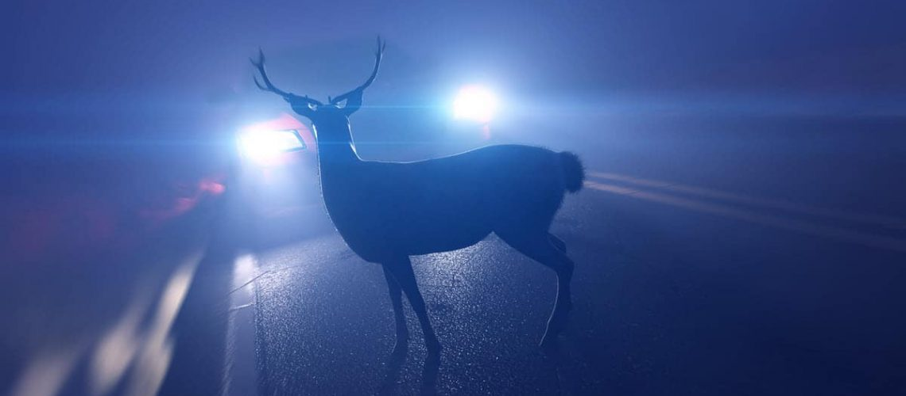

About Syncro-Drive
The Story & Idea
Welcome to Syncro-Drive, a community of car enthusiast dedicated to sharing drtiving skills for better motoring safety and control.
It all started as a drive back home in the wee hours of a wintery misty and foggy morning.
Quite suddenly and without any warning this rather huge deer appeared right on the edge of the left lane from the right side of the motorway and appeared to be oblivious to the headlights and sound of my car.
The approximate distance between car and deer would have been between 5-10 metres.
In just a matter of split seconds, a lot of things happened at once.
My instinctive reaction was to pump the breaks while trying to swerve around the deer whilst thinking about potential traffc in the right lane.
What happened next was akin to hitting a brick wall, an explosive whoosh of the airbags and a sudden loss of visibility as the bonnet slammed into the windscreen.
Neither the deer nor the car survived.
Much later after going through all the standard procedures with the Garda and insurance company, a thought occured as to whether this could have been avoided.
So armed with a list, I set about looking for answers to a particular set of questions with regards to what I could have done differently.
And thus the idea of Syncro-Drive was born.
The idea is to change the way we go about our day to day driving by applying a tried and tested skillset as learned from professional drivers.
And here we are with a growing and ever expanding community of people looking to hone their driving skills in addition to lowering their insurance premiums.
